1 |
01AD |
1. Allgemeines
|
|
Angabe lesen → the quarkus-project is located in the root of the git repo
|
Dein Quarkus-Projekt befindet sich in einem Sub-Dir des git repos.
2. Datenmodell
Bin mir ziemlich sicher, dass das kein Class Diagram ist
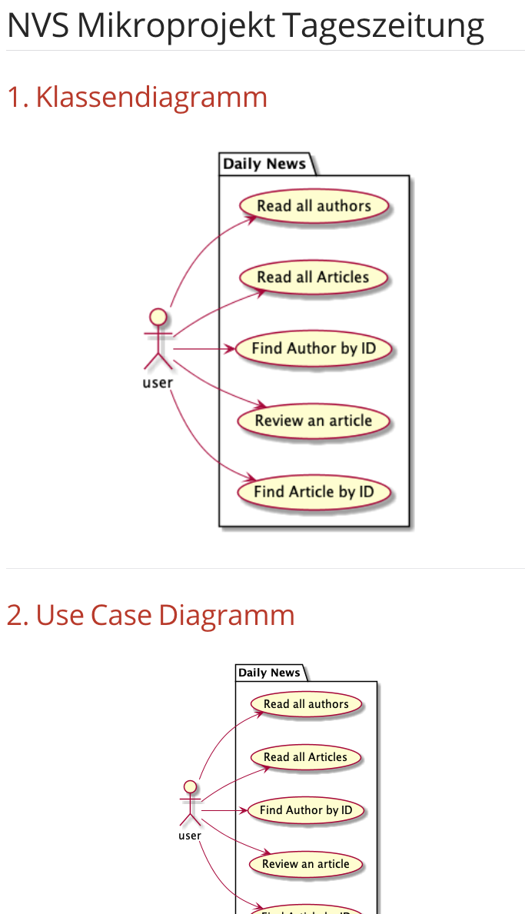
Wer suchet, der findet
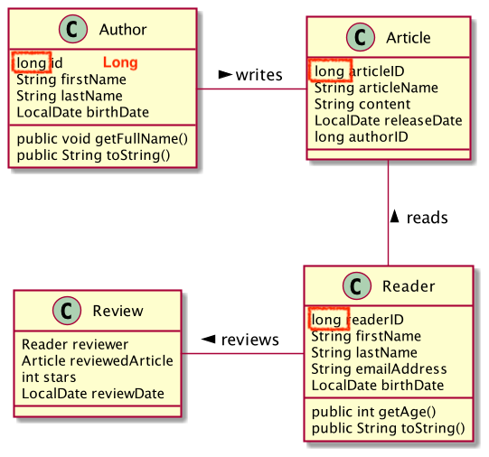
-
Eine id ist eigentlich nicht notwendig. Das Schlüsselkonzept gibt es so in der oo-Programmierung nicht.
-
Long als @id (Objekttyp). Jetzt noch egal, aber mit Datenbanken wichtig.
-
Das Klassendiagramm ist falsch!
-
Ein Autor schreibt einen Artikel → ok
-
Ein Leser liest einen Artikel → ev. auch ok
-
Review ist falsch positioniert (wie man an der nichgt eingezeichneten Assoziation reviewedArticle sieht)
-
Review ist eigentlich die *:* - Auflösung zwischen Article und Reader
-
Ein Artikel kann von mehreren Lesern gelesen werden
-
Ein Leser kann mehrere Artikel lesen und reviewen
-
ARTICLE 1 --- * REVIEW * --- 1 READER
3. Dokumentation
Die Beschreibung im README.md ist mangelhaft
Tageszeitung ist ein Rest-Service, welcher alle Authoren und Artikeln ordnet/speichert.
Das Projekt enthält 4 Klassen (Author, Article, Reader und Review).
Durch die Service-Klasse die für alle Requests zuständig ist, können
wir vom Author, Article und Reader jeweils eine Instanz erstellen und hinzufügen, löschen, updaten und lesen.
4. Projektstruktur (Maven)
5. Automatisierte Tests
-
Deine Tests sind spartanisch (Test der Entites und auch Repositories).
Damit kann man so ziemlich gar nichts testen.
-
und sie funktionieren nur teilweise
-
Du hättest zB die Methode public JsonObject asJsonObject() in der Klasse Article testen sollen.
-
Vermutlich hättest Du dann den Fehler im void AddArticleFromRepository()-Test vermeiden können
-
Methodennamen beginnen mit kleinem Anfangsbuchstaben.
-
Man sollte die Objekte direkt vergleichen, nicht nur die String-Repräsentation
suboptimal
a1.getBirthDate().toString().equals("2002-03-17");
besser
a1.getBirthDate().equals(LocalDate.of(2002, 03, 17));
So sollte ein Test nicht gestaltet sein, …
void AuthorCreatedProperly() {
Author a1 = new Author(1, "Daniel", "Andricic", LocalDate.of(2002, 03, 17));
assertThat(a1)
.isNotNull();
boolean createdProperly = a1.getID() == 1
&& a1.getFirstname().equals("Daniel")
&& a1.getLastname().equals("Andricic")
&& a1.getBirthDate().toString().equals("2002-03-17");
&& a1.getBirthDate().equals(LocalDate.of(2002, 03, 17));
}
...da man in der Fehlermeldung nicht erkennen kann, was nun falsch ist

besser
void AuthorCreatedProperly() {
Author a1 = new Author(1, "Daniel", "Andricic", LocalDate.of(2002, 03, 17));
assertThat(a1)
.isNotNull();
assertThat(a1.getID()).isEqualTo(1L);
assertThat(a1.getFirstname()).isEqualTo("Daniel");
assertThat(a1.getLastname()).isEqualTo("Andricicx");
assertThat(a1.getFullName()).isEqualTo("Daniel Andricic");
assertThat(a1.getBirthDate()).isEqualTo(LocalDate.of(2002, 3, 17));
}
i.S.v. aussagekräftiger:
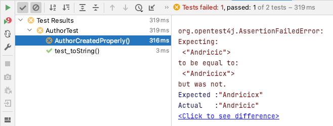
6. Imports
keine exotischen Libraries verwenden, zB hier bei Swagger
<dependencies>
...
<dependency>
<groupId>io.springfox</groupId>
<artifactId>springfox-swagger2</artifactId>
<version>2.9.2</version>
</dependency>
...
</dependencies>
<dependencies>
...
<dependency>
<groupId>io.quarkus</groupId>
<artifactId>quarkus-smallrye-openapi</artifactId>
</dependency>
...
</dependencies>
-
In deinem Fall hast Du beide Imports verwendet.
-
Springfox bietet Libraries vorwiegend für Spring (!) an
-
Der LocalDate-XmlAdapter ist sehr gut
Berücksichtigung von null zB bei marshal(…)
@Override
public String marshal(LocalDate value) throws Exception {
return value == null ? null : value.toString();
}
|
bef(3) |
2 |
02BK aka M |
1. Datenmodell
public List<Order> getOrderList() {
return Collections.unmodifiableList(orderList);
}
3. Dokumentation (README.md)
|
bef(3) |
3 |
03BB |
3. Automatisierte Tests
-
Du musst @QuarkusTest verwenden, sonst funktioniert @Inject nicht
-
Wir verwenden assertJ oder jUnit, aber ganz sicher nicht import org.wildfly.common.Assert;
-
Noch komfortabler und vor allem sprechender wäre die Verwendung von assertJ (assertThat)
-
Leider testest auch Du nicht die Use-Cases, sondern "nur" technische Details (v.a. getter und setter)
4. Imports
Wie viele JAckson-Implementierungen brauchst du eigentlich?
<dependencies>
<dependency>
<groupId>com.fasterxml.jackson.datatype</groupId>
<artifactId>jackson-datatype-jsr310</artifactId>
<version>2.6.5</version>
</dependency>
...
<dependency>
<groupId>com.fasterxml.jackson.module</groupId>
<artifactId>jackson-module-parameter-names</artifactId>
</dependency>
<dependency>
<groupId>com.fasterxml.jackson.datatype</groupId>
<artifactId>jackson-datatype-jdk8</artifactId>
</dependency>
<dependency>
<groupId>com.fasterxml.jackson.datatype</groupId>
<artifactId>jackson-datatype-jsr310</artifactId>
</dependency>
</dependencies>
-
Wenn Du schon unbedingt Jackson verwenden möchtest, dann nimm die Quarkus-Implementierung
-
Du verwendest jsonb und Jackson - eines von beiden reicht
<dependencies>
<dependency>
<groupId>io.quarkus</groupId>
<artifactId>quarkus-jackson</artifactId>
</dependency>
<dependency>
<groupId>io.quarkus</groupId>
<artifactId>quarkus-resteasy-jackson</artifactId>
</dependency>
...
</dependencies>
|
bef(3) |
4 |
04BP |
|
ngd(5) |
5 |
05BJ |
1. Datenmodell Baumschule
2. Use-Case-Diagram
-
falsche Notation
-
Assoziationen haben keine Pfeilspitzen
-
Beschriftung des Systemrahmens
-
UCs bestehen aus einem Verb und einem Substantiv
-
Es geht um Geschäftsprozesse und nicht irgendwelche techn. Inserts oder Updates
|
gen(4) |
6 |
06BN |
1. Datenmodell Kochrezepte
-
Datenmodell im Großen und Ganzen korrekt
-
Der Detaillierungsgrad des Datenmodells bringt eigentlich nichts,
außer man möchte die Kalorien/Joule der einzelnen Speisen berechnen.
-
Für die Klasse RecipeIngedients braucht man kein Repository
|
gut(2) |
7 |
07EB |
|
ngd(5) |
8 |
08EM |
|
gut(2) |
9 |
09GL |
|
ngd(5) |
10 |
10HL |
1. Datenmodell
Was soll das? Ein Klassendiagramm mit Krähenfußnotation?
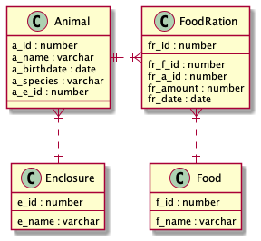
|
ngd(5) |
11 |
11HN |
1. CLass-Diagram
-
welchen Zeichensatz verwendest Du? jedenfalls nicht UTF-8
-
Welches Problem möchtest Du lösen?
-
Bitte um Rücksprache in Discord
|
ngd(5) |
12 |
12HT |
-
Diese CLD ist komplett falsch
-
3 Stammdatentabellen sind nebeneinder angeordnet
-
Du musst Dir Deinen Anwendungszweck überlegen, diesen dokumentieren und anschließend modellieren
-
Notation
-
getter und setter in einem CLD tragen nicht zur Übersichtlichkeit bei
|
ngd(5) |
13 |
13ID |
1. Datenmodell Music-Label
-
Das CLD ist komplett falsch
-
Ein Artist (ev. auch Band) singt Lieder (Song), die auf Schallplatten (Record) released werden.
-
oder es gibt keine Schallplatten/CDs mehr, dann könnte man Vertriebskanäle (youtube,netflix, Radiostationen,…) modellieren und die Einnahmen dieser
|
gen(4) |
14 |
14KJ |
|
bef(3) |
15 |
15KV |
|
gut(2) |
16 |
16ÖMB |
1. Datenmodell
-
Dein Datenmodell passt überhaupt nicht
-
Es ist eine Ansammlung von Stammdaten-Klassen, es fehlen Klassen für die Bewegungsdaten
-
Dein UCD und Dein CLD passen überhaupt nicht zusammen, dh die Use-Cases können vom Datenmodell nicht durchgeführt werden.
1.1. UCD
-
Was soll das Package "Professional"?
-
Beschriftung des Systemrahmens !!!!
-
Du hast UC’s "Drink" und "Take Shower". Hast Du eine Brause in Dein System eingebaut?
|
gen-(4-) |
17 |
17PMa |
1. Datenmodell
Das reicht wohl nicht - ein eigenes CLD war verlangt
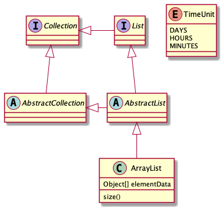
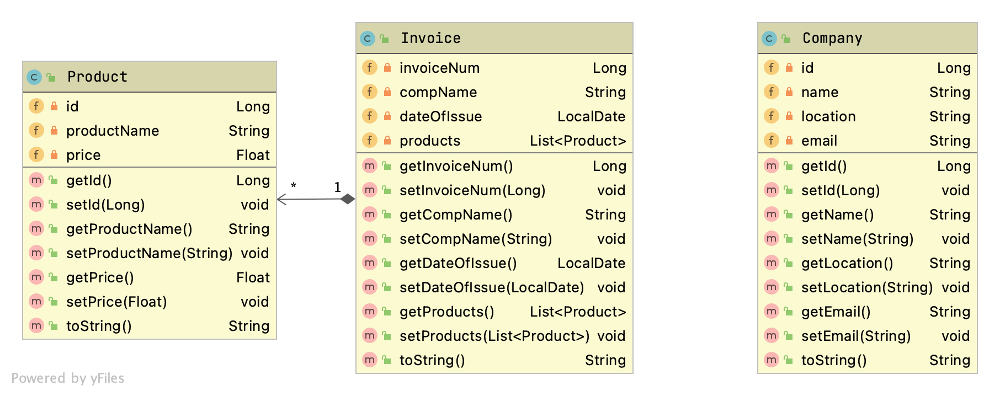
Figure 1. Das tatsächliche CLD
4. Automatisierte Tests
@Test
void getCompanyIdTest() {
Long expected = 1L;
assertThat(expected).isEqualTo(company.getId());
}
|
ngd(5) |
18 |
18PMo |
1. Datenmodell
-
Was soll das sein? Ein Klassendiagramm?
-
Date als String, wirklich?
-
Calculation bedeutet aber nicht Rechnung i.S.v. Ausgangsrechnung!
-
Eine Calculation ist auf einem Car?
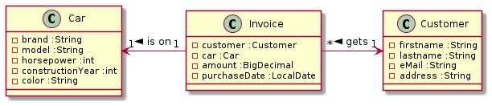
Figure 2. korrigiert
2. Use-Case-Diagram
-
Grundsätzlich ok
-
falsche Notation
3. Documentation
README.md ist spartanisch, aber durchaus aussagekräftig
|
gen(4) |
19 |
19RY |
|
ngd(5) |
20 |
20RR |
Man kann das Projekttitel auch ändern
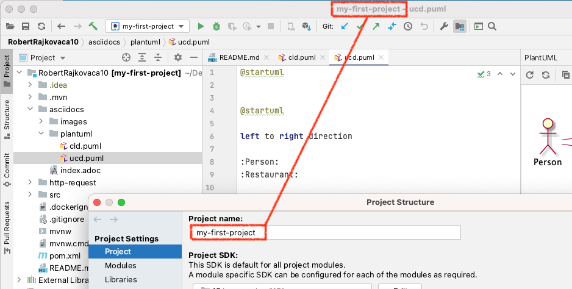
2. Use-Case-Diagram
-
Was bedeutet der UC "look after customers"? Kann man in Deinem System nachschauen, wie es den Gästen geht?
-
Unter Product versteht man Dishes und Beverages.
3. Documentation
README.md ist kurz, aber das Problem ist ausreichend beschrieben
|
ngd(5) |
21 |
21RF |
1. Datenmodell
-
Die Bill (besser Invoice) ist eigentlich schon die assoziative Tabelle der : - Relation zwischen Jewelery (besser Produkt) und Customer
-
Deine Invoice funktioniert nicht. Es fehlt die Rechnungsposition, damit man auf einer Rechnung mehrere Produkte kaufen kann.
-
Jewellery
|
ngd(5) |
22 |
22SE |
1. Datenmodell
-
Die Rekursion beim BusStop ist wahrscheinlich nicht ok.
-
Vielleicht wäre es sinnvoll, nur die Linien und die Abfahrtszeiten zu modellieren
und nicht den Dienstplan der Fahrer
4. Programmierung
Warum hast Du einen Rückgabewert, wenn Du ihn nie benutzt?
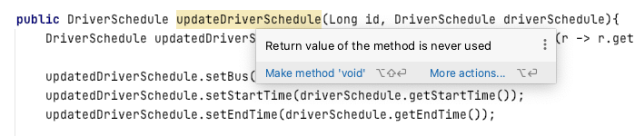
wenn möglich, final wählen
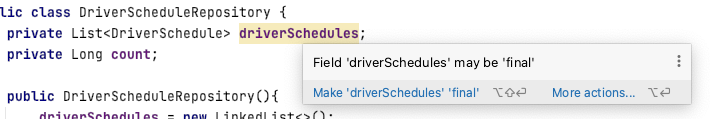
|
gut(2) |
23 |
23SB |
1. Datenmodell
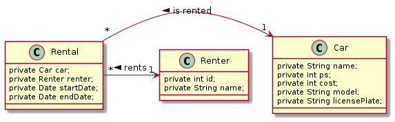
Figure 3. Notation falsch (das ist ja kein Programmcode, sondern ein CLD)
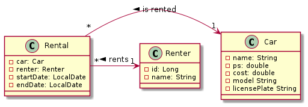
Figure 4. teilweise korrigiert
-
Die Kosten sind eher kein Integer.
-
Wir verwenden kein Date, sondern LocalDate.
-
id ist (fast) immer Datentyp Long. Id hier noch nicht notwendig.
-
Da es hier keine Datenbank gibt, ist eine Id in den Entities nicht notwendig.
-
Wieso heisst Dein package boundaryTest und nicht boundary?
-
Ganz böse - Du verletzt das Prinzip der Kapselung
public List<Car> getCars() {
return this.cars; (1)
}
| 1 |
Man hat Zugriff auf die Liste und kann alles verändern. |
public List<Car> getCars() {
return Collections.unmodifiableList(cars); (1)
}
| 1 |
Nun ist die Liste immutable |
|
gen(4) |
24 |
24SP |
2. Use-Case-Diagram
-
falsche Notation
-
Assoziationen haben keine Pfeilspitzen
-
Beschriftung des Systemrahmens
-
UCs sind keine UCs (Verb + Substantiv). So haben Deine UCs keine Aussagekraft
3. Documentation
Gesamtüberblich beim README.md fehlt
|
ngd(5) |
25 |
25TF |
1. Datenmodell
-
id → Long (kein Primitivdatentyp)
-
Mache Klassen haben eine Id, ander nicht → das ist nicht konsistent
-
Die Notation ist falsch: Was bedeutet "has 1"?
1.1. korrigiert
-
Bei deinem CLD kann ein Buch nur einen Auto haben (das ist nicht sehr realistisch)
-
Die Nationalität als Sting ist wohl sehr nachteilig.
-
Die noOfBooks wird nicht als Zahl eingetragfen, sondern bei Bedarf aus den publizierten Büchern berechnet
-
Eigentlich ist diese Korrektur sinnlos, da Du das Problem nicht ordentlich spezifiziert hast.
|
ngd(5) |
26 |
26TP |
1. Datenmodell
-
wieviele Grabsteine ein Grab hat, spielt für den Friedhofbetreiber wohl keine Rolle
-
Kunden (Customer) können für eine gewisse Dauer entweder Gräber oder Urnengräber mieten
-
Diese Grabstellen können Bereichen zugeordnet werden, in den Gräber nur einer Religionsgemeinschaft zu finden sind
-
Es muss ersichtlich sein, welche Grabstellen sind verfügbar und welche Grabstellen sicn noch für wie lange vermietet.
3. Documentation
In der README.md ist nicht ersichtlich, welches Problem zu lösen ist
|
ngd(5) |
27 |
27WM |
1. Datenmodell
-
Was soll das für ein Call-Center sein?
-
Ein Call-Center hat Kunden
-
Auch das vorhandene minimale CLD stimmt nicht
|
ngd(5) |


{kind=link}